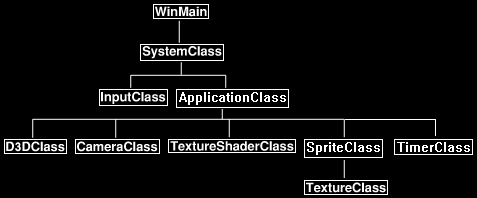

In this tutorial we will cover how to create and render sprites using DirectX 11.
We will also learn the basics of using system timers.
This tutorial builds upon the knowledge from the previous tutorial on how to render 2D bitmap images.
A sprite is an animated image made up of multiple static 2D bitmap images that are rendered quickly in a sequence.
For example, in this tutorial we will create four simple 2D images and save them in targa format.
They look like the following:

Then we will load those four images into a texture array and render them in a sequence to give the illusion of an animated square that has four rotating colors.
Now the way we do that is very simple.
We just reuse the BitmapClass from the previous tutorial and give it an array of textures instead of just one.
We will also update it every frame with the current frame time so that it can smoothly cycle through the four textures.
We will also create a file to represent the data needed to load and render our sprite.
Here is the file we use for this tutorial:
sprite_data_01.txt
4
../Engine/data/sprite01.tga
../Engine/data/sprite02.tga
../Engine/data/sprite03.tga
../Engine/data/sprite04.tga
250
The format is simple.
The first line tells us how many targa images will make up the sprite.
The following lines are the filenames of each targa image that make up the sprite.
And the last line is the speed in milliseconds that we want the sprite to cycle the images at.
Data Driven Design
Now I will take a quick moment to discuss data driven design.
The idea of using text files, tools with sliders and knobs, and so forth to control the contents or flow of the program is called data driven design.
You want to be able to quickly make changes, sometimes by many people at once, to the same program. Sometimes even while the program is running.
And you definitely want to be able to do this without ever having to recompile.
So, in this example here we have a file that controls the basics of how the sprite works, instead of hardcoding any of this into the program.
You can simply modify the text file and run the program again and the changes will take effect.
Framework
The framework has changed by removing the BitmapClass and replacing it with the SpriteClass.
We also add a new class named TimerClass which will record the milliseconds between each frame so that classes like SpriteClass can use it for timing things like animation.

Spriteclass.h
The SpriteClass is just the BitmapClass re-written to include an array of textures.
It also includes a frame timer assist smoothly cycling through the textures that get mapped to the 2D square.
////////////////////////////////////////////////////////////////////////////////
// Filename: spriteclass.h
////////////////////////////////////////////////////////////////////////////////
#ifndef _SPRITECLASS_H_
#define _SPRITECLASS_H_
//////////////
// INCLUDES //
//////////////
#include <directxmath.h>
#include <fstream>
using namespace DirectX;
using namespace std;
///////////////////////
// MY CLASS INCLUDES //
///////////////////////
#include "textureclass.h"
////////////////////////////////////////////////////////////////////////////////
// Class name: SpriteClass
////////////////////////////////////////////////////////////////////////////////
class SpriteClass
{
private:
struct VertexType
{
XMFLOAT3 position;
XMFLOAT2 texture;
};
public:
SpriteClass();
SpriteClass(const SpriteClass&);
~SpriteClass();
bool Initialize(ID3D11Device*, ID3D11DeviceContext*, int, int, char*, int, int);
void Shutdown();
bool Render(ID3D11DeviceContext*);
The new Update function will need to be called each Frame with the speed of the frame as input.
void Update(float);
int GetIndexCount();
ID3D11ShaderResourceView* GetTexture();
void SetRenderLocation(int, int);
private:
bool InitializeBuffers(ID3D11Device*);
void ShutdownBuffers();
bool UpdateBuffers(ID3D11DeviceContext*);
void RenderBuffers(ID3D11DeviceContext*);
bool LoadTextures(ID3D11Device*, ID3D11DeviceContext*, char*);
void ReleaseTextures();
private:
ID3D11Buffer *m_vertexBuffer, *m_indexBuffer;
int m_vertexCount, m_indexCount, m_screenWidth, m_screenHeight, m_bitmapWidth, m_bitmapHeight, m_renderX, m_renderY, m_prevPosX, m_prevPosY;
TextureClass* m_Textures;
float m_frameTime, m_cycleTime;
int m_currentTexture, m_textureCount;
};
#endif
Spriteclass.cpp
////////////////////////////////////////////////////////////////////////////////
// Filename: spriteclass.cpp
////////////////////////////////////////////////////////////////////////////////
#include "spriteclass.h"
SpriteClass::SpriteClass()
{
m_vertexBuffer = 0;
m_indexBuffer = 0;
m_Textures = 0;
}
SpriteClass::SpriteClass(const SpriteClass& other)
{
}
SpriteClass::~SpriteClass()
{
}
The Initialize function works the same as the BitmapClass mostly, but now it takes in a spriteFilename which gives access to the text file that contains the definition of the sprite.
bool SpriteClass::Initialize(ID3D11Device* device, ID3D11DeviceContext* deviceContext, int screenWidth, int screenHeight, char* spriteFilename, int renderX, int renderY)
{
bool result;
// Store the screen size.
m_screenWidth = screenWidth;
m_screenHeight = screenHeight;
// Store where the sprite should be rendered to.
m_renderX = renderX;
m_renderY = renderY;
We also now initialize the frame time. This will be used to control the sprite cycling speed.
// Initialize the frame time for this sprite object.
m_frameTime = 0;
// Initialize the vertex and index buffer that hold the geometry for the sprite bitmap.
result = InitializeBuffers(device);
if(!result)
{
return false;
}
// Load the textures for this sprite.
result = LoadTextures(device, deviceContext, spriteFilename);
if(!result)
{
return false;
}
return true;
}
void SpriteClass::Shutdown()
{
// Release the textures used for this sprite.
ReleaseTextures();
// Release the vertex and index buffers.
ShutdownBuffers();
return;
}
bool SpriteClass::Render(ID3D11DeviceContext* deviceContext)
{
bool result;
// Update the buffers if the position of the sprite has changed from its original position.
result = UpdateBuffers(deviceContext);
if(!result)
{
return false;
}
// Put the vertex and index buffers on the graphics pipeline to prepare them for drawing.
RenderBuffers(deviceContext);
return true;
}
The Update function takes in the frame time each frame.
This will usually be around 16-17ms if you are running your program at 60fps.
Each frame we add this time to the m_frameTime counter.
If it reaches or passes the cycle time that was defined for this sprite, then we change the sprite to use the next texture in the array.
We then reset the timer to start from zero again.
void SpriteClass::Update(float frameTime)
{
// Increment the frame time each frame.
m_frameTime += frameTime;
// Check if the frame time has reached the cycle time.
if(m_frameTime >= m_cycleTime)
{
// If it has then reset the frame time and cycle to the next sprite in the texture array.
m_frameTime -= m_cycleTime;
m_currentTexture++;
// If we are at the last sprite texture then go back to the beginning of the texture array to the first texture again.
if(m_currentTexture == m_textureCount)
{
m_currentTexture = 0;
}
}
return;
}
int SpriteClass::GetIndexCount()
{
return m_indexCount;
}
The GetTexture function now returns the current texture for the sprite from the texture array.
ID3D11ShaderResourceView* SpriteClass::GetTexture()
{
return m_Textures[m_currentTexture].GetTexture();
}
bool SpriteClass::InitializeBuffers(ID3D11Device* device)
{
VertexType* vertices;
unsigned long* indices;
D3D11_BUFFER_DESC vertexBufferDesc, indexBufferDesc;
D3D11_SUBRESOURCE_DATA vertexData, indexData;
HRESULT result;
int i;
// Initialize the previous rendering position to negative one.
m_prevPosX = -1;
m_prevPosY = -1;
// Set the number of vertices in the vertex array.
m_vertexCount = 6;
// Set the number of indices in the index array.
m_indexCount = m_vertexCount;
// Create the vertex array.
vertices = new VertexType[m_vertexCount];
// Create the index array.
indices = new unsigned long[m_indexCount];
// Initialize vertex array to zeros at first.
memset(vertices, 0, (sizeof(VertexType) * m_vertexCount));
// Load the index array with data.
for(i=0; i<m_indexCount; i++)
{
indices[i] = i;
}
// Set up the description of the dynamic vertex buffer.
vertexBufferDesc.Usage = D3D11_USAGE_DYNAMIC;
vertexBufferDesc.ByteWidth = sizeof(VertexType) * m_vertexCount;
vertexBufferDesc.BindFlags = D3D11_BIND_VERTEX_BUFFER;
vertexBufferDesc.CPUAccessFlags = D3D11_CPU_ACCESS_WRITE;
vertexBufferDesc.MiscFlags = 0;
vertexBufferDesc.StructureByteStride = 0;
// Give the subresource structure a pointer to the vertex data.
vertexData.pSysMem = vertices;
vertexData.SysMemPitch = 0;
vertexData.SysMemSlicePitch = 0;
// Now finally create the vertex buffer.
result = device->CreateBuffer(&vertexBufferDesc, &vertexData, &m_vertexBuffer);
if(FAILED(result))
{
return false;
}
// Set up the description of the index buffer.
indexBufferDesc.Usage = D3D11_USAGE_DEFAULT;
indexBufferDesc.ByteWidth = sizeof(unsigned long) * m_indexCount;
indexBufferDesc.BindFlags = D3D11_BIND_INDEX_BUFFER;
indexBufferDesc.CPUAccessFlags = 0;
indexBufferDesc.MiscFlags = 0;
indexBufferDesc.StructureByteStride = 0;
// Give the subresource structure a pointer to the index data.
indexData.pSysMem = indices;
indexData.SysMemPitch = 0;
indexData.SysMemSlicePitch = 0;
// Create the index buffer.
result = device->CreateBuffer(&indexBufferDesc, &indexData, &m_indexBuffer);
if(FAILED(result))
{
return false;
}
// Release the arrays now that the vertex and index buffers have been created and loaded.
delete [] vertices;
vertices = 0;
delete [] indices;
indices = 0;
return true;
}
void SpriteClass::ShutdownBuffers()
{
// Release the index buffer.
if(m_indexBuffer)
{
m_indexBuffer->Release();
m_indexBuffer = 0;
}
// Release the vertex buffer.
if(m_vertexBuffer)
{
m_vertexBuffer->Release();
m_vertexBuffer = 0;
}
return;
}
bool SpriteClass::UpdateBuffers(ID3D11DeviceContext* deviceContent)
{
float left, right, top, bottom;
VertexType* vertices;
D3D11_MAPPED_SUBRESOURCE mappedResource;
VertexType* dataPtr;
HRESULT result;
// If the position we are rendering this bitmap to hasn't changed then don't update the vertex buffer.
if((m_prevPosX == m_renderX) && (m_prevPosY == m_renderY))
{
return true;
}
// If the rendering location has changed then store the new position and update the vertex buffer.
m_prevPosX = m_renderX;
m_prevPosY = m_renderY;
// Create the vertex array.
vertices = new VertexType[m_vertexCount];
// Calculate the screen coordinates of the left side of the bitmap.
left = (float)((m_screenWidth / 2) * -1) + (float)m_renderX;
// Calculate the screen coordinates of the right side of the bitmap.
right = left + (float)m_bitmapWidth;
// Calculate the screen coordinates of the top of the bitmap.
top = (float)(m_screenHeight / 2) - (float)m_renderY;
// Calculate the screen coordinates of the bottom of the bitmap.
bottom = top - (float)m_bitmapHeight;
// Load the vertex array with data.
// First triangle.
vertices[0].position = XMFLOAT3(left, top, 0.0f); // Top left.
vertices[0].texture = XMFLOAT2(0.0f, 0.0f);
vertices[1].position = XMFLOAT3(right, bottom, 0.0f); // Bottom right.
vertices[1].texture = XMFLOAT2(1.0f, 1.0f);
vertices[2].position = XMFLOAT3(left, bottom, 0.0f); // Bottom left.
vertices[2].texture = XMFLOAT2(0.0f, 1.0f);
// Second triangle.
vertices[3].position = XMFLOAT3(left, top, 0.0f); // Top left.
vertices[3].texture = XMFLOAT2(0.0f, 0.0f);
vertices[4].position = XMFLOAT3(right, top, 0.0f); // Top right.
vertices[4].texture = XMFLOAT2(1.0f, 0.0f);
vertices[5].position = XMFLOAT3(right, bottom, 0.0f); // Bottom right.
vertices[5].texture = XMFLOAT2(1.0f, 1.0f);
// Lock the vertex buffer.
result = deviceContent->Map(m_vertexBuffer, 0, D3D11_MAP_WRITE_DISCARD, 0, &mappedResource);
if(FAILED(result))
{
return false;
}
// Get a pointer to the data in the constant buffer.
dataPtr = (VertexType*)mappedResource.pData;
// Copy the data into the vertex buffer.
memcpy(dataPtr, (void*)vertices, (sizeof(VertexType) * m_vertexCount));
// Unlock the vertex buffer.
deviceContent->Unmap(m_vertexBuffer, 0);
// Release the pointer reference.
dataPtr = 0;
// Release the vertex array as it is no longer needed.
delete [] vertices;
vertices = 0;
return true;
}
void SpriteClass::RenderBuffers(ID3D11DeviceContext* deviceContext)
{
unsigned int stride;
unsigned int offset;
// Set vertex buffer stride and offset.
stride = sizeof(VertexType);
offset = 0;
// Set the vertex buffer to active in the input assembler so it can be rendered.
deviceContext->IASetVertexBuffers(0, 1, &m_vertexBuffer, &stride, &offset);
// Set the index buffer to active in the input assembler so it can be rendered.
deviceContext->IASetIndexBuffer(m_indexBuffer, DXGI_FORMAT_R32_UINT, 0);
// Set the type of primitive that should be rendered from this vertex buffer, in this case triangles.
deviceContext->IASetPrimitiveTopology(D3D11_PRIMITIVE_TOPOLOGY_TRIANGLELIST);
return;
}
The LoadTextures function has been changed from the BitmapClass version.
It now opens a file that defines the SpriteClass object.
We open the file and read in the number of textures it uses, each tga file used for each of the textures, and the speed at which it should cycle through the textures.
bool SpriteClass::LoadTextures(ID3D11Device* device, ID3D11DeviceContext* deviceContext, char* filename)
{
char textureFilename[128];
ifstream fin;
int i, j;
char input;
bool result;
// Open the sprite info data file.
fin.open(filename);
if(fin.fail())
{
return false;
}
// Read in the number of textures.
fin >> m_textureCount;
// Create and initialize the texture array with the texture count from the file.
m_Textures = new TextureClass[m_textureCount];
// Read to start of next line.
fin.get(input);
// Read in each texture file name.
for(i=0; i<m_textureCount; i++)
{
j=0;
fin.get(input);
while(input != '\n')
{
textureFilename[j] = input;
j++;
fin.get(input);
}
textureFilename[j] = '\0';
// Once you have the filename then load the texture in the texture array.
result = m_Textures[i].Initialize(device, deviceContext, textureFilename);
if(!result)
{
return false;
}
}
// Read in the cycle time.
fin >> m_cycleTime;
// Convert the integer milliseconds to float representation.
m_cycleTime = m_cycleTime * 0.001f;
// Close the file.
fin.close();
// Get the dimensions of the first texture and use that as the dimensions of the 2D sprite images.
m_bitmapWidth = m_Textures[0].GetWidth();
m_bitmapHeight = m_Textures[0].GetHeight();
// Set the starting texture in the cycle to be the first one in the list.
m_currentTexture = 0;
return true;
}
The ReleaseTextures function will release the array of textures that was loaded at the start of the program.
void SpriteClass::ReleaseTextures()
{
int i;
// Release the texture objects.
if(m_Textures)
{
for(i=0; i<m_textureCount; i++)
{
m_Textures[i].Shutdown();
}
delete [] m_Textures;
m_Textures = 0;
}
return;
}
void SpriteClass::SetRenderLocation(int x, int y)
{
m_renderX = x;
m_renderY = y;
return;
}
Timerclass.h
The TimerClass is a high precision timer that measures the exact time between frames of execution.
Its primary use is for synchronizing objects that require a standard time frame for movement.
////////////////////////////////////////////////////////////////////////////////
// Filename: timerclass.h
////////////////////////////////////////////////////////////////////////////////
#ifndef _TIMERCLASS_H_
#define _TIMERCLASS_H_
//////////////
// INCLUDES //
//////////////
#include <windows.h>
////////////////////////////////////////////////////////////////////////////////
// Class name: TimerClass
////////////////////////////////////////////////////////////////////////////////
class TimerClass
{
public:
TimerClass();
TimerClass(const TimerClass&);
~TimerClass();
bool Initialize();
void Frame();
float GetTime();
private:
float m_frequency;
INT64 m_startTime;
float m_frameTime;
};
#endif
Timerclass.cpp
///////////////////////////////////////////////////////////////////////////////
// Filename: timerclass.cpp
///////////////////////////////////////////////////////////////////////////////
#include "timerclass.h"
TimerClass::TimerClass()
{
}
TimerClass::TimerClass(const TimerClass& other)
{
}
TimerClass::~TimerClass()
{
}
The Initialize function will first query the system to see if it supports high frequency timers.
If it returns a frequency then we use that value to determine how many counter ticks will occur each millisecond.
We can then use that value each frame to calculate the frame time.
At the end of the Initialize function we query for the start time of this frame to start the timing.
bool TimerClass::Initialize()
{
INT64 frequency;
// Get the cycles per second speed for this system.
QueryPerformanceFrequency((LARGE_INTEGER*)&frequency);
if(frequency == 0)
{
return false;
}
// Store it in floating point.
m_frequency = (float)frequency;
// Get the initial start time.
QueryPerformanceCounter((LARGE_INTEGER*)&m_startTime);
return true;
}
The Frame function is called for every single loop of execution by the main program.
This way we can calculate the difference of time between loops and determine the time it took to execute this frame.
We query, calculate, and then store the time for this frame into m_frameTime so that it can be used by any calling object for synchronization.
We then store the current time as the start of the next frame.
void TimerClass::Frame()
{
INT64 currentTime;
INT64 elapsedTicks;
// Query the current time.
QueryPerformanceCounter((LARGE_INTEGER*)¤tTime);
// Calculate the difference in time since the last time we queried for the current time.
elapsedTicks = currentTime - m_startTime;
// Calculate the frame time.
m_frameTime = (float)elapsedTicks / m_frequency;
// Restart the timer.
m_startTime = currentTime;
return;
}
GetTime returns the most recent frame time that was calculated.
float TimerClass::GetTime()
{
return m_frameTime;
}
Applicationclass.h
The ApplicationClass now uses the new SpriteClass and TimerClass.
////////////////////////////////////////////////////////////////////////////////
// Filename: applicationclass.h
////////////////////////////////////////////////////////////////////////////////
#ifndef _APPLICATIONCLASS_H_
#define _APPLICATIONCLASS_H_
///////////////////////
// MY CLASS INCLUDES //
///////////////////////
#include "d3dclass.h"
#include "cameraclass.h"
#include "textureshaderclass.h"
#include "spriteclass.h"
#include "timerclass.h"
/////////////
// GLOBALS //
/////////////
const bool FULL_SCREEN = false;
const bool VSYNC_ENABLED = true;
const float SCREEN_DEPTH = 1000.0f;
const float SCREEN_NEAR = 0.3f;
////////////////////////////////////////////////////////////////////////////////
// Class name: ApplicationClass
////////////////////////////////////////////////////////////////////////////////
class ApplicationClass
{
public:
ApplicationClass();
ApplicationClass(const ApplicationClass&);
~ApplicationClass();
bool Initialize(int, int, HWND);
void Shutdown();
bool Frame();
private:
bool Render();
private:
D3DClass* m_Direct3D;
CameraClass* m_Camera;
TextureShaderClass* m_TextureShader;
SpriteClass* m_Sprite;
TimerClass* m_Timer;
};
#endif
Applicationclass.cpp
////////////////////////////////////////////////////////////////////////////////
// Filename: applicationclass.cpp
////////////////////////////////////////////////////////////////////////////////
#include "applicationclass.h"
ApplicationClass::ApplicationClass()
{
m_Direct3D = 0;
m_Camera = 0;
m_TextureShader = 0;
m_Sprite = 0;
m_Timer = 0;
}
ApplicationClass::ApplicationClass(const ApplicationClass& other)
{
}
ApplicationClass::~ApplicationClass()
{
}
bool ApplicationClass::Initialize(int screenWidth, int screenHeight, HWND hwnd)
{
char spriteFilename[128];
bool result;
// Create and initialize the Direct3D object.
m_Direct3D = new D3DClass;
result = m_Direct3D->Initialize(screenWidth, screenHeight, VSYNC_ENABLED, hwnd, FULL_SCREEN, SCREEN_DEPTH, SCREEN_NEAR);
if(!result)
{
MessageBox(hwnd, L"Could not initialize Direct3D", L"Error", MB_OK);
return false;
}
// Create the camera object.
m_Camera = new CameraClass;
// Set the initial position of the camera.
m_Camera->SetPosition(0.0f, 0.0f, -10.0f);
m_Camera->Render();
// Create and initialize the texture shader object.
m_TextureShader = new TextureShaderClass;
result = m_TextureShader->Initialize(m_Direct3D->GetDevice(), hwnd);
if(!result)
{
MessageBox(hwnd, L"Could not initialize the texture shader object.", L"Error", MB_OK);
return false;
}
Here we initialize the new sprite object using the sprite_data_01.txt file.
// Set the sprite info file we will be using.
strcpy_s(spriteFilename, "../Engine/data/sprite_data_01.txt");
// Create and initialize the sprite object.
m_Sprite = new SpriteClass;
result = m_Sprite->Initialize(m_Direct3D->GetDevice(), m_Direct3D->GetDeviceContext(), screenWidth, screenHeight, spriteFilename, 50, 50);
if(!result)
{
return false;
}
The new TimerClass object is initialized here.
// Create and initialize the timer object.
m_Timer = new TimerClass;
result = m_Timer->Initialize();
if(!result)
{
return false;
}
return true;
}
In the Shutdown function we will release the new SpriteClass and TimerClass objects.
void ApplicationClass::Shutdown()
{
// Release the timer object.
if(m_Timer)
{
delete m_Timer;
m_Timer = 0;
}
// Release the sprite object.
if(m_Sprite)
{
m_Sprite->Shutdown();
delete m_Sprite;
m_Sprite = 0;
}
// Release the texture shader object.
if(m_TextureShader)
{
m_TextureShader->Shutdown();
delete m_TextureShader;
m_TextureShader = 0;
}
// Release the camera object.
if(m_Camera)
{
delete m_Camera;
m_Camera = 0;
}
// Release the Direct3D object.
if(m_Direct3D)
{
m_Direct3D->Shutdown();
delete m_Direct3D;
m_Direct3D = 0;
}
return;
}
bool ApplicationClass::Frame()
{
float frameTime;
bool result;
Each frame we update the TimerClass object to record the delta in time since the last frame in milliseconds.
// Update the system stats.
m_Timer->Frame();
// Get the current frame time.
frameTime = m_Timer->GetTime();
// Update the sprite object using the frame time.
m_Sprite->Update(frameTime);
// Render the graphics scene.
result = Render();
if(!result)
{
return false;
}
return true;
}
bool ApplicationClass::Render()
{
XMMATRIX worldMatrix, viewMatrix, orthoMatrix;
bool result;
// Clear the buffers to begin the scene.
m_Direct3D->BeginScene(0.0f, 0.0f, 0.0f, 1.0f);
// Get the world, view, and projection matrices from the camera and d3d objects.
m_Direct3D->GetWorldMatrix(worldMatrix);
m_Camera->GetViewMatrix(viewMatrix);
m_Direct3D->GetOrthoMatrix(orthoMatrix);
// Turn off the Z buffer to begin all 2D rendering.
m_Direct3D->TurnZBufferOff();
Now we render the sprite.
// Put the sprite vertex and index buffers on the graphics pipeline to prepare them for drawing.
result = m_Sprite->Render(m_Direct3D->GetDeviceContext());
if(!result)
{
return false;
}
// Render the sprite with the texture shader.
result = m_TextureShader->Render(m_Direct3D->GetDeviceContext(), m_Sprite->GetIndexCount(), worldMatrix, viewMatrix, orthoMatrix, m_Sprite->GetTexture());
if(!result)
{
return false;
}
// Turn the Z buffer back on now that all 2D rendering has completed.
m_Direct3D->TurnZBufferOn();
// Present the rendered scene to the screen.
m_Direct3D->EndScene();
return true;
}
Summary
We can now render animated sprites on the screen.

To Do Exercises
1. Recompile and make sure you have an animated sprite rendered to 50,50 on the screen.
2. Change the speed the sprite runs at in the text file.
3. Create your own sprite that uses more than four frames of animation and get it running.
4. Use the TimerClass and SpriteClass together to move the sprite smoothly across the screen.
Source Code
Source Code and Data Files: dx11win10tut13_src.zip